Social media sample set
Seven Facebook posts (1080 × 1080) for the first month: two a week, built from idCodeX's own project photos and catalogue figures. English for Africa and the Caucasus, French for Algeria. Each image comes with its caption, ready to paste.
Africa ad set
Six paid-ad creatives for African markets, English and French. First wave: Kenya, Uganda and Tanzania, the AFCON 2027 hosts; then West and North Africa. Fan photos are free-licensed from Wikimedia Commons (CC0 or CC BY, no share-alike), so they can be used in paid ads; credits are on the images and below. They show African supporters, not idCodeX gates, and the captions say only what idCodeX delivered.
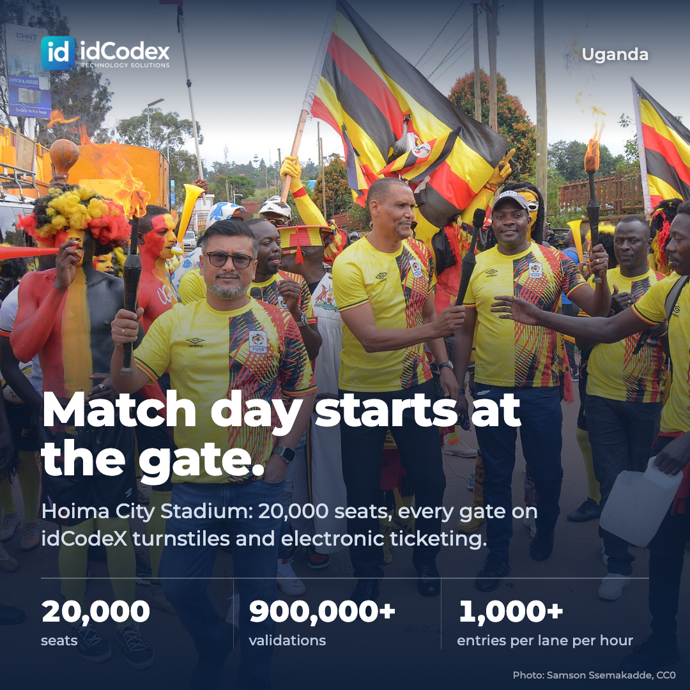
Target: Kenya, Uganda, Tanzania · English
Match day starts at the gate. At Hoima City Stadium in Uganda, every entrance runs on idCodeX turnstiles and electronic ticketing: 20,000 seats, more than 900,000 validations, over 1,000 entries per lane per hour.
Building or upgrading a stadium for AFCON 2027? Send us the drawings.
project@idcodex.tech
#AFCON2027 #Uganda #Stadium
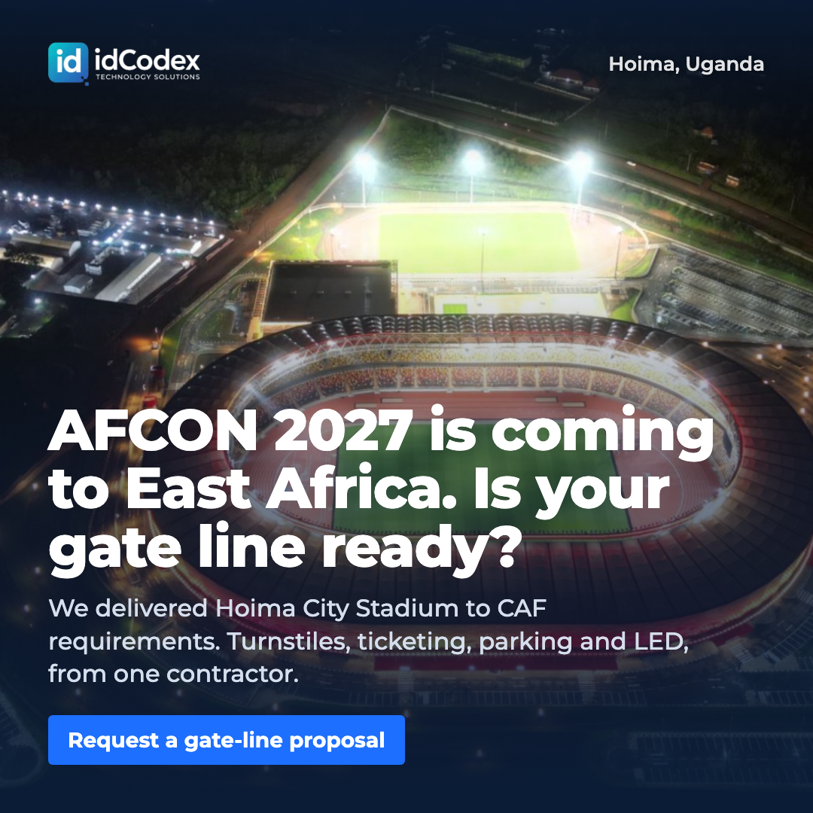
Target: Kenya, Uganda, Tanzania · English
AFCON 2027 will be played in Kenya, Uganda and Tanzania. Every host stadium needs a gate line that moves tens of thousands of fans in safely and validates every ticket.
We delivered Hoima City Stadium to CAF requirements and can do the same for yours: turnstiles, electronic ticketing, smart parking and LED scoreboards, designed, installed and commissioned by one team.
project@idcodex.tech
#AFCON2027 #Kenya #Tanzania
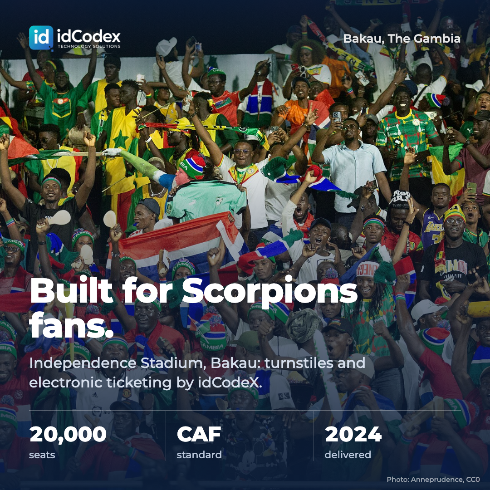
Target: The Gambia, Senegal, Ghana, Nigeria · English
Independence Stadium in Bakau welcomes 20,000 fans through idCodeX turnstiles and electronic ticketing, delivered to CAF standards in 2024.
idcodex.tech
#TheGambia #Scorpions #Stadium
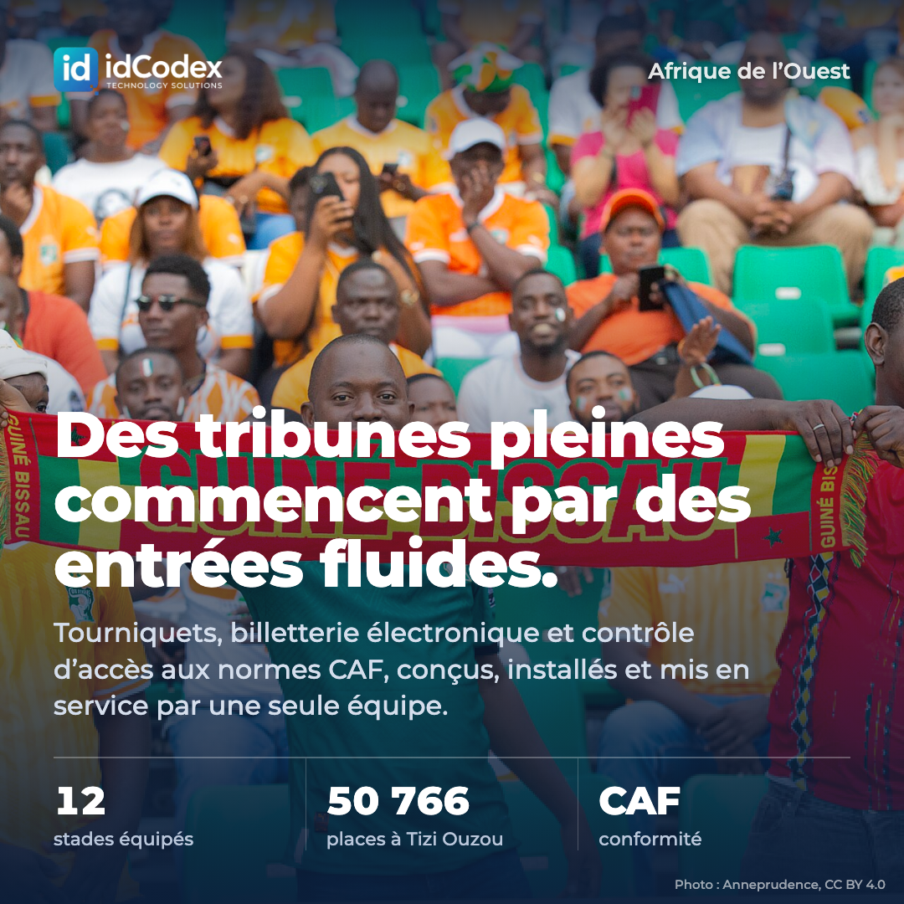
Target: Côte d’Ivoire, Sénégal, Cameroun, Algérie · French
Des tribunes pleines commencent par des entrées fluides. idCodeX conçoit, installe et met en service les tourniquets, la billetterie électronique et le contrôle d’accès des stades, aux normes CAF : douze stades équipés, jusqu’à 50 766 places.
project@idcodex.tech
#CAN #Stade #Billetterie
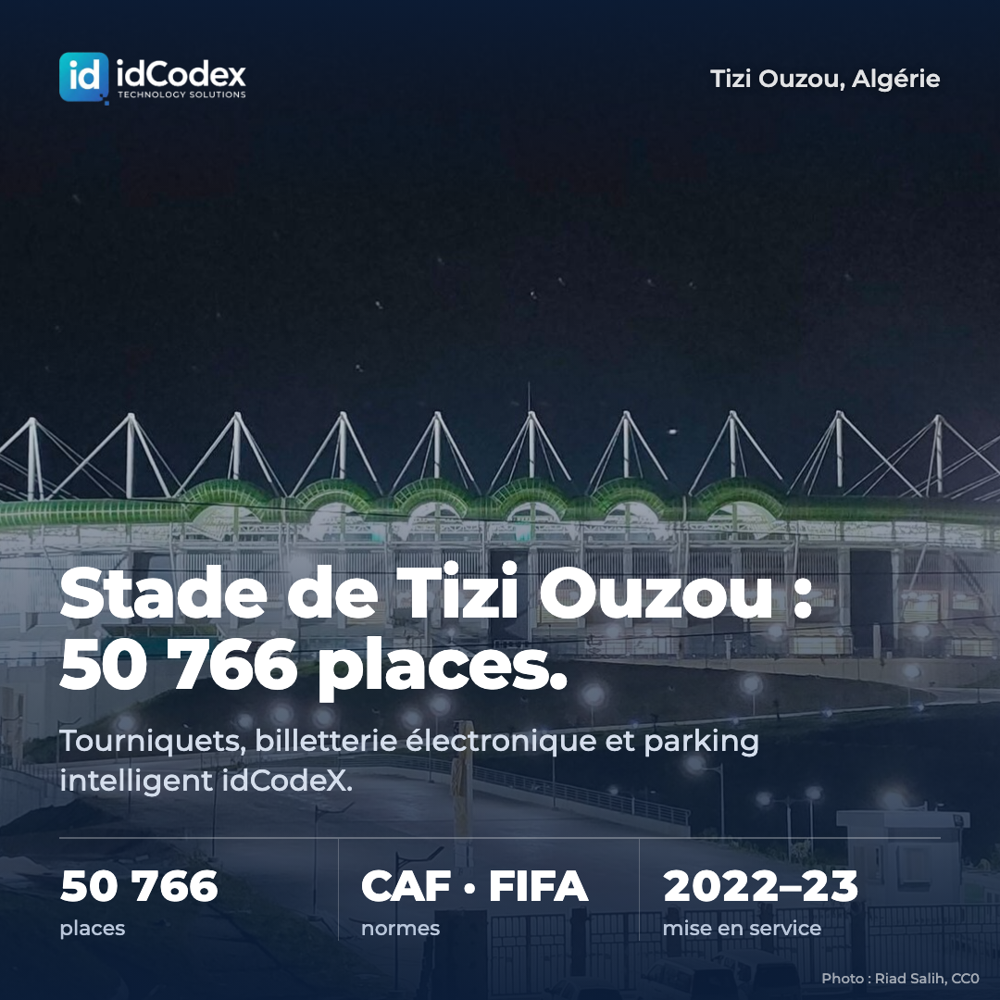
Target: Algérie, Maroc, Tunisie · French
Au stade de Tizi Ouzou, 50 766 spectateurs entrent par des tourniquets idCodeX, avec billetterie électronique et parking intelligent. Mis en service en 2022–23, aux normes CAF et FIFA.
idcodex.tech
#Algérie #TiziOuzou #Stade
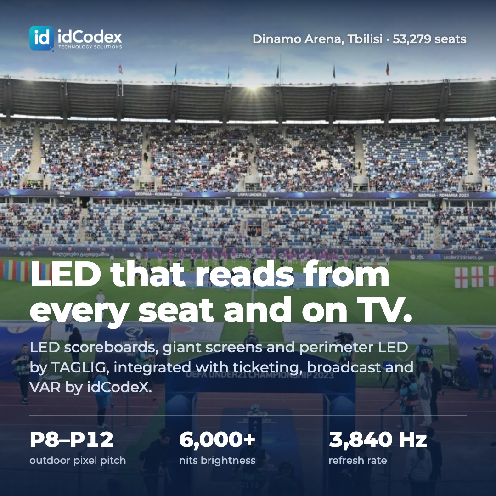
Target: Africa (all) · English
A stadium screen has to be readable in afternoon sun, flicker-free on camera and still running after ten rainy seasons. We supply TAGLIG LED scoreboards, giant screens and perimeter boards and integrate them with your ticketing, broadcast and VAR systems.
Pictured: Boris Paichadze Dinamo Arena, Tbilisi (53,279 seats).
project@idcodex.tech
#LED #Scoreboard #Stadium
Photo credits
Still wanted: our own match-day photos from Hoima and Bakau (fans at the gates, the control room) and a photo of an LED scoreboard we installed in Africa. They replace the Commons photos as soon as they arrive.
Organic page posts
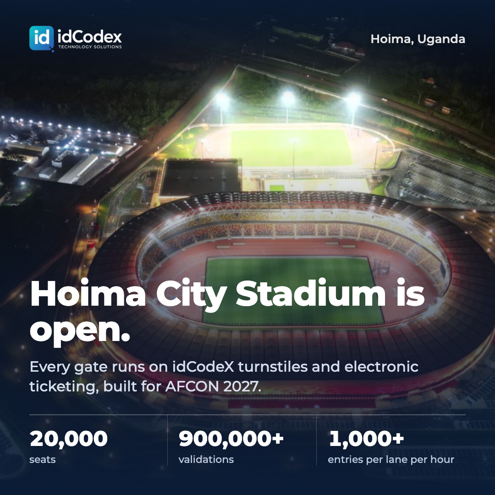
Week 1, Tuesday · Uganda, Kenya, Tanzania, Zambia, Ghana · English
Hoima City Stadium in Uganda is open, and every gate runs on idCodeX turnstiles and electronic ticketing. 20,000 seats, more than 900,000 successful validations so far, over 1,000 entries per lane per hour. Built by SUMMA, ready for AFCON 2027.
idcodex.tech
#Uganda #AFCON2027 #StadiumTechnology
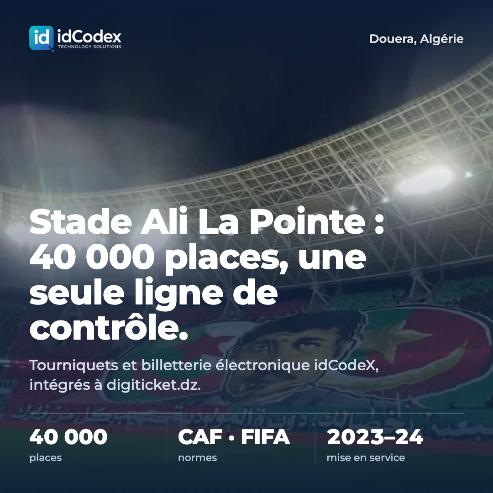
Week 1, Thursday · Algeria (French) · French
Au stade Ali La Pointe de Douera, 40 000 spectateurs passent par des tourniquets et une billetterie électronique idCodeX, reliés à la plateforme digiticket.dz. Conception, installation et mise en service par une seule équipe.
idcodex.tech
#Algérie #Stade #Billetterie
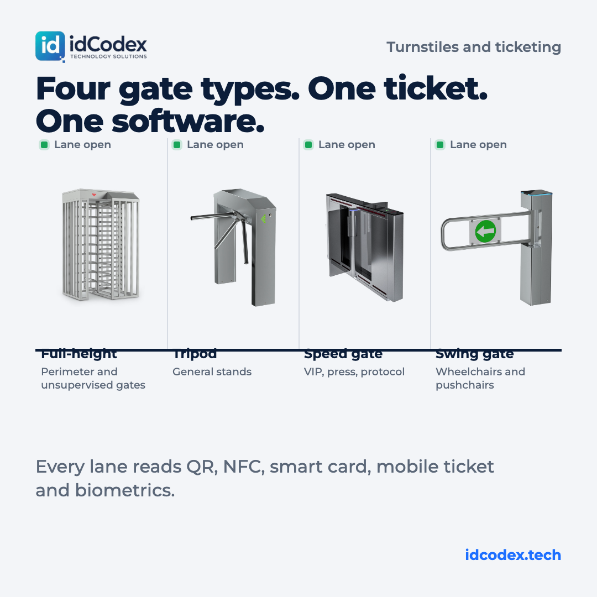
Week 2, Tuesday · All regions · English
A stadium needs more than one kind of gate. Full-height turnstiles for the perimeter, tripods for the stands, speed gates for VIP and press, swing gates for step-free access. Every lane reads the same ticket and reports to the same stadium software.
idcodex.tech/en/turnstiles-ticketing
#AccessControl #Turnstiles #Stadium
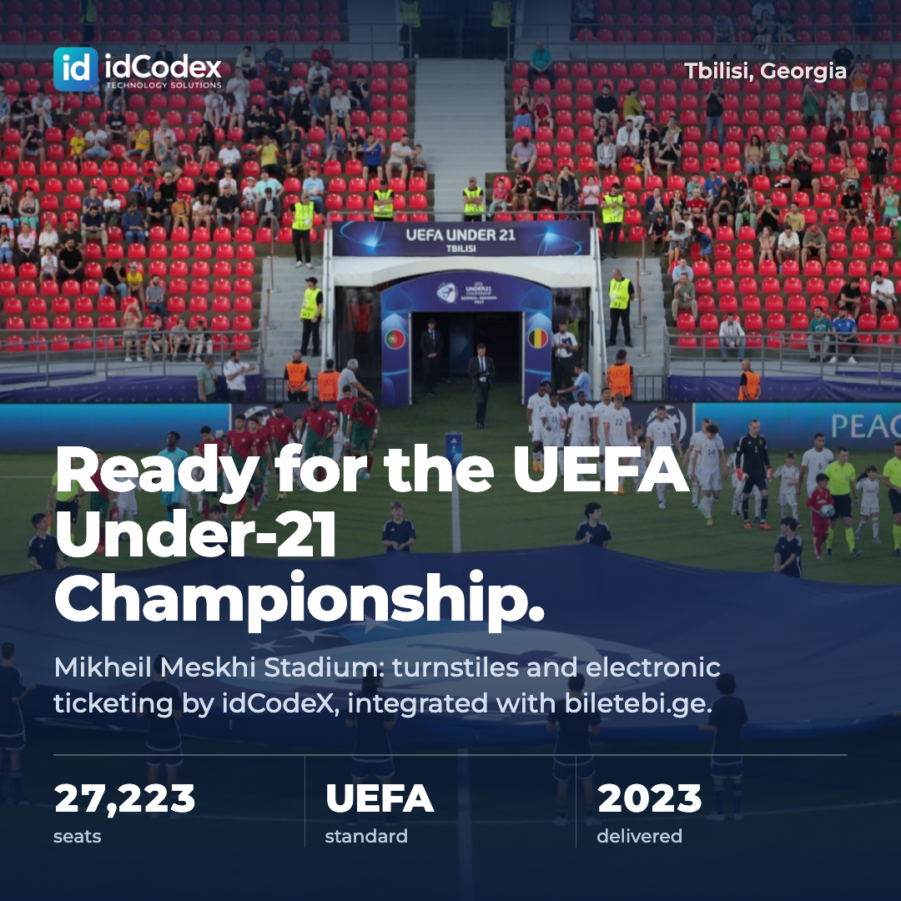
Week 2, Thursday · Georgia · English
Mikheil Meskhi Stadium in Tbilisi hosted the UEFA Under-21 Championship with idCodeX turnstiles and electronic ticketing at every entrance, connected to biletebi.ge. Three stadiums in Georgia now run on our systems: Meskhi, Ramaz Shengelia in Kutaisi and the LED scoreboard at Dinamo Arena.
idcodex.tech
#Georgia #UEFA #Tbilisi
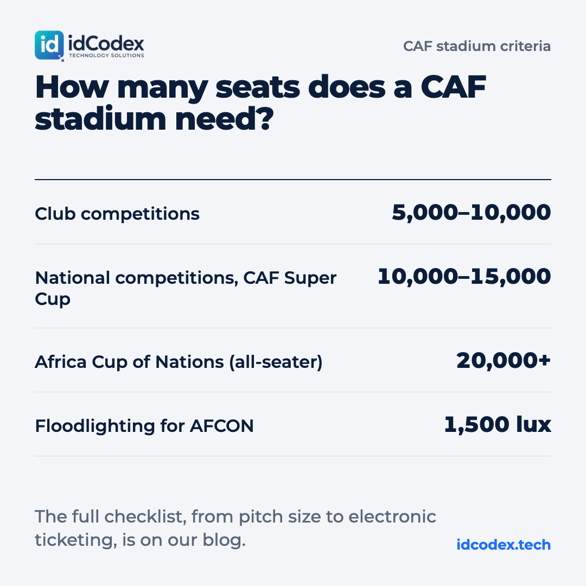
Week 3, Tuesday · Africa · English
Planning a stadium for CAF competitions? Capacity is only the start: the criteria also cover floodlighting, security cameras, access control and electronic ticketing. We put the full checklist in one article.
idcodex.tech/en/blog/caf-stadium-criteria
#CAF #AFCON #StadiumDesign
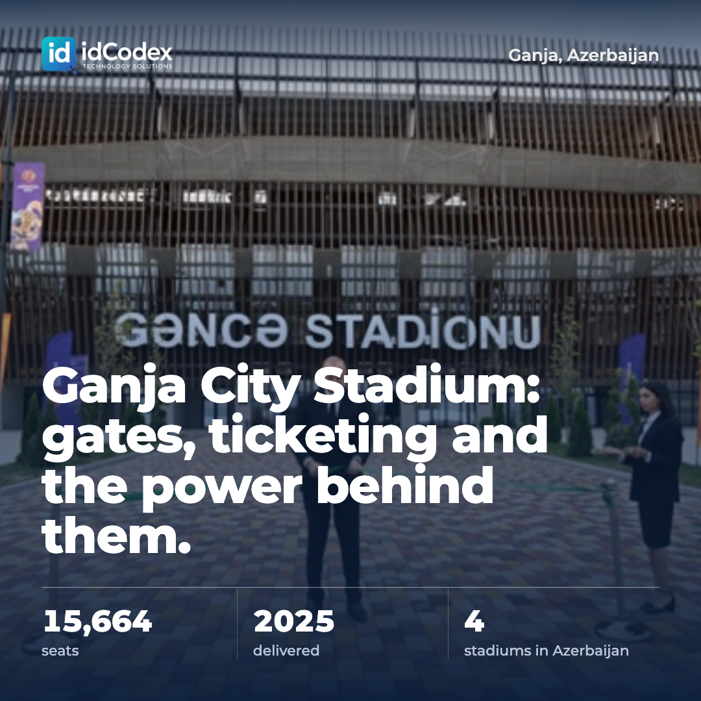
Week 3, Thursday · Azerbaijan · English
At Ganja City Stadium we delivered the turnstiles, the electronic ticketing integrated with iticket.az, and the electrical infrastructure that keeps them running: cabling, distribution panels and generators. One contractor, one commissioning report.
idcodex.tech
#Azerbaijan #Ganja #StadiumTechnology
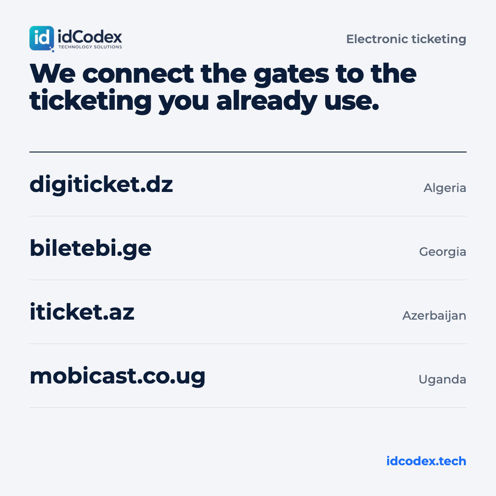
Week 4, Tuesday · All regions · English
Federations and clubs already have a ticketing partner. We do not replace it: we integrate it with the turnstiles, so every ticket sold is validated live at the gate and counted in the control room.
idcodex.tech
#Ticketing #Stadium #Integration
House rules for the account
One subject per post: a stadium, a product or a standard. Every number comes from the catalogue or a delivered project. Real photos from our sites, never stock images of generic stadiums. Navy and blue only; green marks an open lane. Three hashtags at most. Algeria in French; Georgia and Azerbaijan in English, with Russian or Azerbaijani versions if a local partner asks.